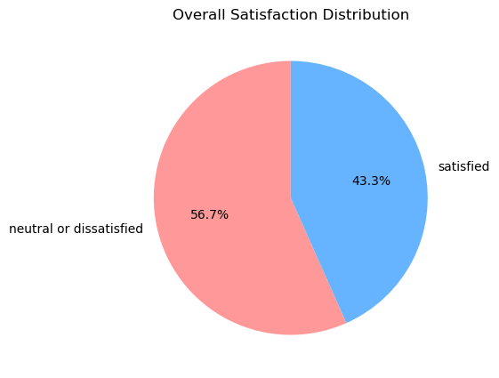
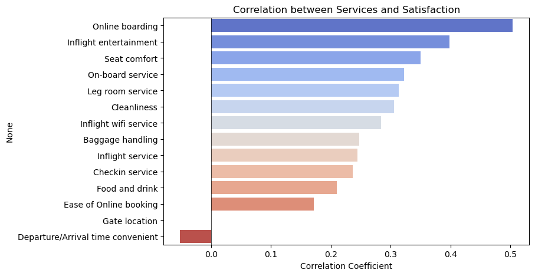
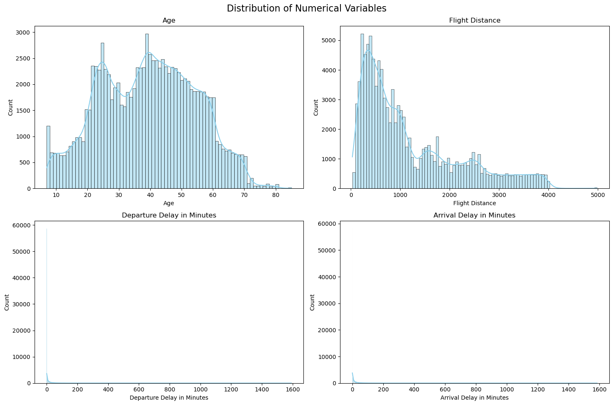
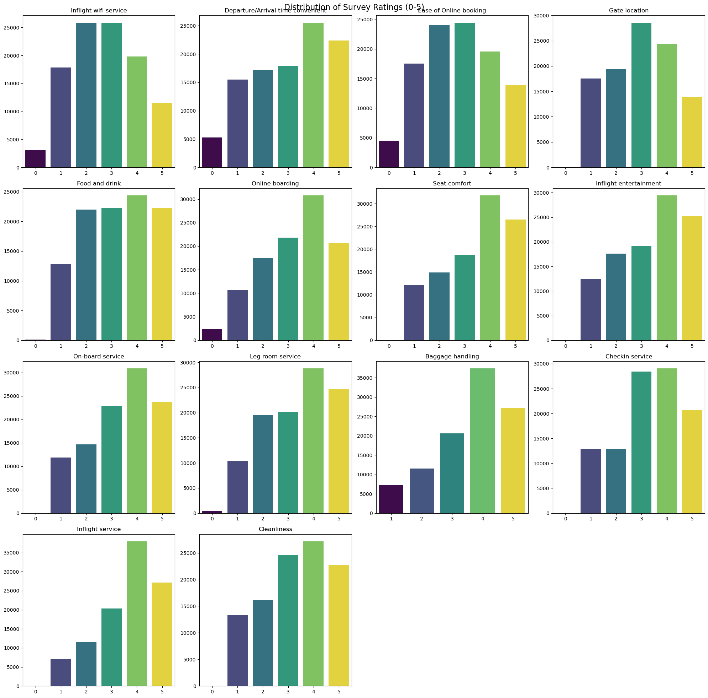
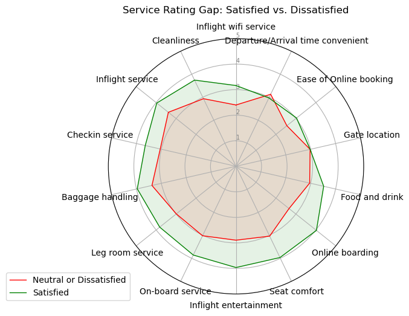
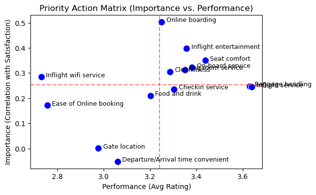
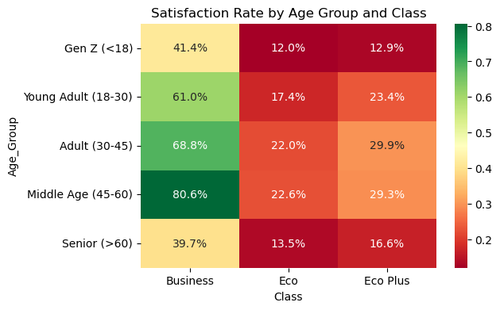
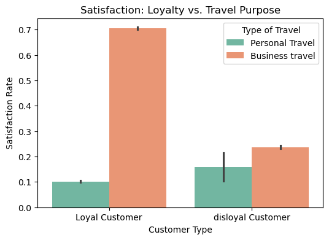

Ch 9. Survey Analysis#
1. Data Input#

Gemini’s Explanation#
This dataset contains airline passenger satisfaction survey data. It includes each passenger’s demographic information, flight details, and satisfaction ratings for various services, and can be used for a classification problem to predict whether a passenger was satisfied.
The key characteristics of the data are as follows.
1. Data Structure#
Total observations: 103,904
Number of variables (columns): 25
Target variable:
satisfaction(binary classification: ‘neutral or dissatisfied’ or ‘satisfied’)
2. Variable Descriptions#
Passenger Demographics#
Gender: Gender (Male, Female)Customer Type: Customer type (Loyal Customer, disloyal Customer)Age: Passenger age (ranges from 7 to 85)
Flight Information#
Type of Travel: Travel purpose (Business travel, Personal Travel)Class: Seat class (Business, Eco, Eco Plus)Flight Distance: Flight distance
Service Satisfaction Ratings#
14 service items rated on a 0–5 scale.
Includes
Inflight wifi service,Food and drink,Seat comfort,Inflight entertainment,On-board service,Leg room service,Cleanliness, etc.
Delay Information#
Departure Delay in Minutes: Departure delay (minutes)Arrival Delay in Minutes: Arrival delay (minutes)
3. Data Notes#
The
Arrival Delay in Minutesvariable contains 310 missing values (NaN). Preprocessing such as removal or imputation (mean/median) may be needed.idandUnnamed: 0are simple identifiers and are generally excluded from modeling.A score of 0 among service satisfaction ratings likely indicates ‘not rated’ or ‘service not used’ and requires verification.
2. Satisfaction Analysis#
Gemini’s Analysis#
The satisfaction analysis results are as follows.
1. Overall Satisfaction Overview#
The proportion of satisfied vs. dissatisfied (or neutral) passengers is roughly balanced, though the dissatisfied proportion tends to be slightly higher.

2. Analysis of Key Influencing Factors#
Seat Class:#
Business: Very high satisfaction; the proportion of satisfied passengers far exceeds that of dissatisfied ones.
Eco / Eco Plus: The dissatisfied proportion is overwhelmingly high. Improving the experience of economy class passengers is a critical task for overall satisfaction improvement.

Type of Travel:#
Business travel: Business travelers show relatively higher satisfaction.
Personal Travel: Personal travelers have a very high dissatisfaction rate. This may be because personal travelers are more price-sensitive or primarily use economy class.

Customer Type:#
Loyal Customer: The satisfaction rate of loyal customers (approximately 47.7%) is more than twice that of disloyal customers (approximately 23.7%). This suggests that the loyalty program is working effectively, or that satisfied customers remain as loyal customers in a virtuous cycle.
3. Service Item Correlation Analysis#
The service items showing the strongest positive correlation with satisfaction are as follows (by correlation coefficient):

Online boarding (0.50): Convenience of online boarding procedures has the greatest impact on satisfaction. This suggests the importance of app and website UI/UX improvements.
Inflight entertainment (0.40): The quality of the in-flight entertainment system is directly linked to satisfaction.
Seat comfort (0.35): Seat comfort is a significant factor, especially on long-haul flights.
On-board service (0.32): Crew service attitude and quality is also a key factor.
Leg room service (0.31): Legroom also affects satisfaction.
In contrast, Departure/Arrival time convenient and Gate location showed relatively low correlations with satisfaction. This may be because these factors are beyond the airline’s control or passengers accept them as given.
4. Conclusions and Recommendations#
Improve economy class services: The dissatisfaction rate among Eco and Eco Plus passengers is very high, so improving services (especially seat comfort, meals) for these passengers is urgent.
Enhance digital experience: Since
Online boardingshows the highest correlation with satisfaction, making the mobile app and website check-in process simpler and more intuitive could be a low-cost, high-impact satisfaction improvement strategy.Retain loyal customers and convert disloyal ones: To improve the low satisfaction of disloyal customers, benefits or service differentiation for first-time users should be considered.
3. Descriptive Analysis by Survey Item#
Gemini’s Analysis#
The following are the descriptive analysis results for all survey items.

1. Categorical Variable Analysis (Demographics & Flight Info)#
Item |
Mode (Top) |
Frequency (Freq) |
Description |
|---|---|---|---|
Gender |
Female |
52,727 (50.7%) |
The gender ratio is nearly equal. |
Customer Type |
Loyal Customer |
84,923 (81.7%) |
Loyal customers account for an overwhelmingly large share. |
Type of Travel |
Business travel |
71,655 (69.0%) |
Business travelers outnumber personal travelers. |
Class |
Business |
49,665 (47.8%) |
Business class passengers are most numerous, followed by Eco (44.2%) and Eco Plus (7.2%). |
Satisfaction |
Neutral/Dissatisfied |
58,879 (56.7%) |
Dissatisfied (or neutral) passengers slightly outnumber satisfied ones. |
2. Numerical Variable Analysis (Age, Distance, Delays)#

Item |
Mean |
Median |
Max |
Note |
|---|---|---|---|---|
Age |
39.4 |
40.0 |
85.0 |
Passenger ages are roughly evenly distributed, similar to a normal distribution. |
Flight Distance |
1,189 |
843 |
4,983 |
Short-haul flights are more frequent (right-skewed distribution). |
Departure Delay |
14.8 min |
0.0 min |
1,592 min |
Most flights have no delay (0 min), but some extreme delay cases exist. |
Arrival Delay |
15.2 min |
0.0 min |
1,584 min |
Shows a similar distribution to departure delays. |
3. Service Satisfaction Item Analysis (0–5 Scale)#
The rating distributions for each service item are as follows. A score of 0 likely indicates ‘service not provided’ or ‘not used.’

Item |
count |
mean |
std |
min |
25% |
50% |
75% |
max |
Zero count |
|---|---|---|---|---|---|---|---|---|---|
Inflight wifi service |
103,904 |
2.73 |
1.33 |
0.0 |
2.0 |
3.0 |
4.0 |
5.0 |
3,103 |
Dept/Arrival time convenient |
103,904 |
3.06 |
1.53 |
0.0 |
2.0 |
3.0 |
4.0 |
5.0 |
5,300 |
Ease of Online booking |
103,904 |
2.76 |
1.40 |
0.0 |
2.0 |
3.0 |
4.0 |
5.0 |
4,487 |
Gate location |
103,904 |
2.98 |
1.28 |
0.0 |
2.0 |
3.0 |
4.0 |
5.0 |
1 |
Food and drink |
103,904 |
3.20 |
1.33 |
0.0 |
2.0 |
3.0 |
4.0 |
5.0 |
107 |
Online boarding |
103,904 |
3.25 |
1.35 |
0.0 |
2.0 |
3.0 |
4.0 |
5.0 |
2,428 |
Seat comfort |
103,904 |
3.44 |
1.32 |
0.0 |
2.0 |
4.0 |
5.0 |
5.0 |
1 |
Inflight entertainment |
103,904 |
3.36 |
1.33 |
0.0 |
2.0 |
4.0 |
4.0 |
5.0 |
14 |
On-board service |
103,904 |
3.38 |
1.29 |
0.0 |
2.0 |
4.0 |
4.0 |
5.0 |
3 |
Leg room service |
103,904 |
3.35 |
1.32 |
0.0 |
2.0 |
4.0 |
4.0 |
5.0 |
472 |
Baggage handling |
103,904 |
3.63 |
1.18 |
1.0 |
3.0 |
4.0 |
5.0 |
5.0 |
0 |
Checkin service |
103,904 |
3.30 |
1.27 |
0.0 |
3.0 |
3.0 |
4.0 |
5.0 |
1 |
Inflight service |
103,904 |
3.64 |
1.18 |
0.0 |
3.0 |
4.0 |
5.0 |
5.0 |
3 |
Cleanliness |
103,904 |
3.29 |
1.31 |
0.0 |
2.0 |
3.0 |
4.0 |
5.0 |
12 |
High average ratings (3.5+):#
Inflight service(3.64): High satisfaction with overall in-flight service.Baggage handling(3.63): Positive evaluations of baggage handling.Seat comfort(3.44): Seat comfort also received relatively good ratings.
Low average ratings (below 3.0):#
Inflight wifi service(2.73): Greatest dissatisfaction with wifi, or many passengers did not use it (3,103 zero scores).Ease of Online booking(2.76): Online booking convenience needs improvement.Gate location(2.98): Gate location satisfaction is below average.
Notable findings (zero-score frequency):#
Departure/Arrival time convenient(5,300),Ease of Online booking(4,487), andInflight wifi service(3,103) had many zero-score responses, suggesting a significant number of passengers did not use or declined to rate these services.In contrast,
Baggage handlinghad zero instances of a zero score, meaning all passengers provided a rating.
Summary:#
Overall, human-delivered services such as cabin crew service and baggage handling received positive evaluations, while technical/system-based conveniences such as wifi and booking systems received relatively lower ratings. Therefore, improving digital service quality could be the key driver for overall satisfaction improvement.
4. In-Depth Survey Analysis I#
Gemini’s Analysis#
This dataset includes multidimensional factors affecting customer satisfaction (demographics, service quality, operational performance, etc.), enabling in-depth analysis for strategic decision-making beyond simple descriptive statistics.
Specific analyses and insight examples are as follows.
1. Service Gap Analysis (Using Radar Charts)#
By comparing service rating differences between satisfied and dissatisfied customers, we can identify which services are critical pain points.

Analysis Results:#
Inflight wifi service, Online boarding, and Inflight entertainment — digital and convenience service items — show very large score gaps between the satisfied and dissatisfied groups.
In contrast, Gate location and Departure/Arrival time convenient show relatively small differences between groups.
Conclusion: Improving digital experiences and in-flight amenities is far more effective for satisfaction improvement than improving physical operations (gates, schedules).
2. Operational Efficiency and Customer Sensitivity Analysis (Delay Impact)#
By analyzing how satisfaction changes as flight delays increase, we can identify the threshold of ‘tolerable delay time.’
Delay Group |
Satisfaction Rate |
|---|---|
0 min |
0.4725 |
1-15 min |
0.4130 |
16-30 min |
0.3527 |
31-60 min |
0.3564 |
1-2 hr |
0.3524 |
2-3 hr |
0.3659 |
>3 hr |
0.3654 |
Analysis Results:#
With no delay (0 min), the satisfaction rate is approximately 47.2%.
At 1–15 minutes of delay, satisfaction drops sharply to 41.3%, and at 16–30 minutes it falls to 35.3%.
Interestingly, after 30 minutes, satisfaction does not drop much further even with longer delays, staying at the 35–36% level (floor effect).
Conclusion: Preventing delays within the initial 15 minutes is most critical for defending satisfaction. Once the 30-minute mark is passed, a strategy of compensating through other services rather than additional delay compensation may be needed.
3. Customer Segmentation and Targeting Strategy#
By combining Customer Type, Type of Travel, and Class, segment-level satisfaction is analyzed.
Class |
Business Travel |
Personal Travel |
|---|---|---|
Business |
0.7202 |
0.1224 |
Eco |
0.2962 |
0.1020 |
Eco Plus |
0.3933 |
0.0871 |
Analysis Results (Satisfaction Rate):#
Business Class + Business Travel: 72.0% satisfaction (core satisfied group)
Eco Class + Business Travel: 29.6% satisfaction (potentially dissatisfied group)
Eco Class + Personal Travel: 10.2% satisfaction (vulnerable group)
Conclusion: Business class business travelers already have high satisfaction and require a retention strategy, but personal travelers in economy class have extremely low satisfaction, making it urgent to introduce low-cost, high-impact services (e.g., streamlined mobile check-in, improved in-flight wifi) for this segment.
4. Predictive Modeling#
Since this data has a target variable (satisfaction), the following predictions can be made using machine learning models.
Churn prediction: Given a specific passenger’s service rating pattern, predict satisfaction/dissatisfaction.
Feature importance extraction: Using Random Forest or XGBoost, quantitatively determine which variables contribute most to satisfaction prediction (more sophisticated than correlation analysis).
5. Persona Analysis#
Based on data characteristics, virtual customer profiles can be created to develop tailored strategies.
Example: “Budget-conscious traveler” (Eco Class, Personal Travel, Price Sensitive) → These passengers may be more sensitive to seat comfort and entertainment than in-flight meals.
As such, this dataset can be utilized beyond simple status assessment as an analytical tool for service investment prioritization, target marketing, and operational KPI setting to create business impact.
5. In-Depth Survey Analysis II#
Gemini’s Analysis#
Importance-Performance Analysis (IPA)
Item |
Importance |
Performance |
|---|---|---|
Online boarding |
0.503557 |
3.250375 |
Inflight entertainment |
0.398059 |
3.358158 |
Seat comfort |
0.349459 |
3.439396 |
On-board service |
0.322383 |
3.382363 |
Leg room service |
0.313131 |
3.351055 |
This survey data enables multifaceted analyses beyond simple satisfaction assessment, including service strategy formulation, customer segmentation, and future satisfaction prediction.
The main analyses are summarized as follows.
1. Priority Action Matrix (IPA: Importance-Performance Analysis)#
Each service item’s importance (correlation with satisfaction) and performance (average score) are mapped on a 2D plane to derive strategic priorities.
Method: Set the X-axis as Performance and Y-axis as Importance to perform quadrant analysis.

Implications:#
Concentrate Here (High Importance, Low Performance):
Inflight wifi serviceandEase of Online bookinglikely fall here. These have a large impact on satisfaction but currently receive low ratings, making them the top improvement priorities.Keep Up the Good Work (High Importance, High Performance):
Seat comfortandInflight entertainmentare already performing well and should be maintained as core strengths.Possible Overkill (Low Importance, High Performance): Items with low importance but high scores — resources can be reallocated to address other weaknesses.
2. Demographic Segmentation#
Analyze how satisfaction varies by passenger age, gender, and travel purpose to develop targeted marketing strategies.

By Age Group:#
Gen Z / Millennials: May be sensitive to digital services (wifi, app convenience).
Middle-aged / Seniors: May place more emphasis on seat comfort and human service (crew attitude).
By Seat Class:#
Business class: High expectations commensurate with the high price paid; particularly sensitive to privacy and food/drink quality.
Economy class: Value for money and basic comfort (legroom) are most important.
3. Context-Based Service Analysis#
Analyze how environmental factors such as flight distance and delays affect satisfaction.
Sensitivity by Flight Distance:#

On short-haul flights, seat comfort may be less important, but on long-haul flights, Seat Comfort and Inflight Entertainment become decisive factors for satisfaction.
Delay Sensitivity:#
By analyzing how sharply satisfaction drops at each 15-minute, 30-minute, and 1-hour delay increment, a “golden time” threshold can be established.
4. Customer Loyalty Analysis#
Analyze behavioral pattern differences between Loyal Customers and Disloyal Customers.

Churn risk detection: Identify pain points that especially dissatisfy disloyal customers to develop strategies for converting them to loyal customers.
Loyal customer reinforcement: Strengthen factors that keep loyal customers consistently satisfied to turn them into brand advocates.
5. Machine Learning-Based Predictive Modeling#
Train on the data to predict future satisfaction or identify key drivers.
Satisfaction prediction: Input a passenger’s characteristics and flight information to predict the probability of satisfaction. This enables pre-boarding identification of ‘at-risk dissatisfied passengers’ for proactive care (upgrades, coupons, etc.).
Feature Importance: Using algorithms such as Random Forest or XGBoost, rank the variables by their impact on satisfaction. This provides more sophisticated insights than correlation analysis.
6. Text Mining — If Text Columns Are Available#
If open-ended response data is included, NLP-based sentiment analysis or topic modeling can be performed to uncover specific complaints (e.g., “the crew was unfriendly,” “the in-flight meal was too salty”) that cannot be captured by numerical data alone. (Not present in the current dataset but useful if collected additionally.)
Reference: Python Code#
# 1. Data loading
import pandas as pd
# Load dataframe
df = pd.read_csv('../Data/train.csv')
# Inspect data
print("Data info:")
print(df.info())
Data info:
<class 'pandas.core.frame.DataFrame'>
RangeIndex: 103904 entries, 0 to 103903
Data columns (total 25 columns):
# Column Non-Null Count Dtype
--- ------ -------------- -----
0 Unnamed: 0 103904 non-null int64
1 id 103904 non-null int64
2 Gender 103904 non-null object
3 Customer Type 103904 non-null object
4 Age 103904 non-null int64
5 Type of Travel 103904 non-null object
6 Class 103904 non-null object
7 Flight Distance 103904 non-null int64
8 Inflight wifi service 103904 non-null int64
9 Departure/Arrival time convenient 103904 non-null int64
10 Ease of Online booking 103904 non-null int64
11 Gate location 103904 non-null int64
12 Food and drink 103904 non-null int64
13 Online boarding 103904 non-null int64
14 Seat comfort 103904 non-null int64
15 Inflight entertainment 103904 non-null int64
16 On-board service 103904 non-null int64
17 Leg room service 103904 non-null int64
18 Baggage handling 103904 non-null int64
19 Checkin service 103904 non-null int64
20 Inflight service 103904 non-null int64
21 Cleanliness 103904 non-null int64
22 Departure Delay in Minutes 103904 non-null int64
23 Arrival Delay in Minutes 103594 non-null float64
24 satisfaction 103904 non-null object
dtypes: float64(1), int64(19), object(5)
memory usage: 19.8+ MB
None
# 2. Satisfaction analysis
import pandas as pd
import matplotlib.pyplot as plt
import seaborn as sns
# Convert satisfaction (target) to binary numeric
df['satisfaction_binary'] = df['satisfaction'].apply(lambda x: 1 if x == 'satisfied' else 0)
# --- 1. Overall satisfaction proportion (Pie Chart) ---
plt.figure(figsize=(5, 5))
satisfaction_counts = df['satisfaction'].value_counts()
plt.pie(satisfaction_counts, labels=satisfaction_counts.index, autopct='%1.1f%%',
startangle=90, colors=['#ff9999','#66b3ff'])
plt.title('Overall Satisfaction Distribution')
plt.show()
# --- 2. Satisfaction by seat class (Countplot) ---
plt.figure(figsize=(6, 4))
sns.countplot(x='Class', hue='satisfaction', data=df, palette='Set2',
order=['Eco', 'Eco Plus', 'Business'])
plt.title('Satisfaction by Class')
plt.xlabel('Class')
plt.ylabel('Count')
plt.show()
# --- 3. Satisfaction by type of travel (Countplot) ---
plt.figure(figsize=(6, 4))
sns.countplot(x='Type of Travel', hue='satisfaction', data=df, palette='Set2')
plt.title('Satisfaction by Type of Travel')
plt.xlabel('Type of Travel')
plt.ylabel('Count')
plt.show()
# --- 4. Correlation between each service item and satisfaction (Bar Chart) ---
plt.figure(figsize=(8, 5))
# Calculate correlations
numeric_df = df.select_dtypes(include=['int64', 'float64'])
correlations = numeric_df.corr()['satisfaction_binary'].drop('satisfaction_binary')
# Filter service-related variables only
service_cols = ['Inflight wifi service', 'Departure/Arrival time convenient', 'Ease of Online booking',
'Gate location', 'Food and drink', 'Online boarding', 'Seat comfort',
'Inflight entertainment', 'On-board service', 'Leg room service',
'Baggage handling', 'Checkin service', 'Inflight service', 'Cleanliness']
service_corr = correlations[service_cols].sort_values(ascending=False)
sns.barplot(x=service_corr.values, y=service_corr.index, hue=service_corr.index, palette='coolwarm', legend=False)
plt.title('Correlation between Services and Satisfaction')
plt.xlabel('Correlation Coefficient')
plt.axvline(x=0, color='black', linestyle='-', linewidth=0.5)
plt.show()
# --- Print statistics ---
print("Top 5 Correlated Features with Satisfaction:")
print(correlations.abs().sort_values(ascending=False).head(5))
print("\nMean Satisfaction Rate by Customer Type:")
print(df.groupby('Customer Type')['satisfaction_binary'].mean())




Top 5 Correlated Features with Satisfaction:
Online boarding 0.503557
Inflight entertainment 0.398059
Seat comfort 0.349459
On-board service 0.322383
Leg room service 0.313131
Name: satisfaction_binary, dtype: float64
Mean Satisfaction Rate by Customer Type:
Customer Type
Loyal Customer 0.477291
disloyal Customer 0.236658
Name: satisfaction_binary, dtype: float64
# 3. Descriptive analysis by survey item
import pandas as pd
import matplotlib.pyplot as plt
import seaborn as sns
import numpy as np
# Define column groups for analysis (categorical, numerical, survey items)
categorical_cols = ['Gender', 'Customer Type', 'Type of Travel', 'Class', 'satisfaction']
numerical_cols = ['Age', 'Flight Distance', 'Departure Delay in Minutes', 'Arrival Delay in Minutes']
survey_cols = ['Inflight wifi service', 'Departure/Arrival time convenient', 'Ease of Online booking',
'Gate location', 'Food and drink', 'Online boarding', 'Seat comfort',
'Inflight entertainment', 'On-board service', 'Leg room service',
'Baggage handling', 'Checkin service', 'Inflight service', 'Cleanliness']
# 1. Categorical data visualization
fig1, axes1 = plt.subplots(2, 3, figsize=(18, 10))
fig1.suptitle('Distribution of Categorical Variables', fontsize=16)
axes1 = axes1.flatten()
for i, col in enumerate(categorical_cols):
# Set hue to x-axis variable and legend=False to suppress warnings
sns.countplot(x=col, data=df, ax=axes1[i], hue=col, palette='Set2', legend=False)
axes1[i].set_title(col)
# Display count labels on top of bars
for p in axes1[i].patches:
axes1[i].annotate(f'{p.get_height()}', (p.get_x() + p.get_width() / 2., p.get_height()),
ha='center', va='bottom')
# Remove empty subplot (6 slots, only 5 used)
if len(categorical_cols) < 6:
fig1.delaxes(axes1[5])
plt.tight_layout()
plt.show()
# 2. Numerical data visualization (histograms)
fig2, axes2 = plt.subplots(2, 2, figsize=(15, 10))
fig2.suptitle('Distribution of Numerical Variables', fontsize=16)
axes2 = axes2.flatten()
for i, col in enumerate(numerical_cols):
# Drop NaN and plot histogram with KDE
sns.histplot(df[col].dropna(), kde=True, ax=axes2[i], color='skyblue')
axes2[i].set_title(col)
plt.tight_layout()
plt.show()
# 3. Survey item visualization (0-5 scale bar charts)
fig3, axes3 = plt.subplots(4, 4, figsize=(20, 20))
fig3.suptitle('Distribution of Survey Ratings (0-5)', fontsize=16)
axes3 = axes3.flatten()
for i, col in enumerate(survey_cols):
sns.countplot(x=col, data=df, ax=axes3[i], hue=col, palette='viridis', legend=False)
axes3[i].set_title(col)
axes3[i].set_ylabel('') # Remove y-axis label (save space)
axes3[i].set_xlabel('') # Remove x-axis label
# Remove remaining empty subplots (16 slots, not all used)
for j in range(len(survey_cols), 16):
fig3.delaxes(axes3[j])
plt.tight_layout()
plt.show()
# Summary statistics tables (Describe)
desc_cat = df[categorical_cols].describe().transpose()
desc_num = df[numerical_cols].describe().transpose()
desc_survey = df[survey_cols].describe().transpose()
print("Categorical Summary:")
print(desc_cat)
print("\nNumerical Summary:")
print(desc_num)
print("\nSurvey Items Summary:")
print(desc_survey)
# Count zero scores for each survey item (0 likely means 'N/A')
zero_counts = (df[survey_cols] == 0).sum()
print("\nZero-score counts per service item (possibly N/A):")
print(zero_counts)



Categorical Summary:
count unique top freq
Gender 103904 2 Female 52727
Customer Type 103904 2 Loyal Customer 84923
Type of Travel 103904 2 Business travel 71655
Class 103904 3 Business 49665
satisfaction 103904 2 neutral or dissatisfied 58879
Numerical Summary:
count mean std min 25% \
Age 103904.0 39.379706 15.114964 7.0 27.0
Flight Distance 103904.0 1189.448375 997.147281 31.0 414.0
Departure Delay in Minutes 103904.0 14.815618 38.230901 0.0 0.0
Arrival Delay in Minutes 103594.0 15.178678 38.698682 0.0 0.0
50% 75% max
Age 40.0 51.0 85.0
Flight Distance 843.0 1743.0 4983.0
Departure Delay in Minutes 0.0 12.0 1592.0
Arrival Delay in Minutes 0.0 13.0 1584.0
Survey Items Summary:
count mean std min 25% \
Inflight wifi service 103904.0 2.729683 1.327829 0.0 2.0
Departure/Arrival time convenient 103904.0 3.060296 1.525075 0.0 2.0
Ease of Online booking 103904.0 2.756901 1.398929 0.0 2.0
Gate location 103904.0 2.976883 1.277621 0.0 2.0
Food and drink 103904.0 3.202129 1.329533 0.0 2.0
Online boarding 103904.0 3.250375 1.349509 0.0 2.0
Seat comfort 103904.0 3.439396 1.319088 0.0 2.0
Inflight entertainment 103904.0 3.358158 1.332991 0.0 2.0
On-board service 103904.0 3.382363 1.288354 0.0 2.0
Leg room service 103904.0 3.351055 1.315605 0.0 2.0
Baggage handling 103904.0 3.631833 1.180903 1.0 3.0
Checkin service 103904.0 3.304290 1.265396 0.0 3.0
Inflight service 103904.0 3.640428 1.175663 0.0 3.0
Cleanliness 103904.0 3.286351 1.312273 0.0 2.0
50% 75% max
Inflight wifi service 3.0 4.0 5.0
Departure/Arrival time convenient 3.0 4.0 5.0
Ease of Online booking 3.0 4.0 5.0
Gate location 3.0 4.0 5.0
Food and drink 3.0 4.0 5.0
Online boarding 3.0 4.0 5.0
Seat comfort 4.0 5.0 5.0
Inflight entertainment 4.0 4.0 5.0
On-board service 4.0 4.0 5.0
Leg room service 4.0 4.0 5.0
Baggage handling 4.0 5.0 5.0
Checkin service 3.0 4.0 5.0
Inflight service 4.0 5.0 5.0
Cleanliness 3.0 4.0 5.0
Zero-score counts per service item (possibly N/A):
Inflight wifi service 3103
Departure/Arrival time convenient 5300
Ease of Online booking 4487
Gate location 1
Food and drink 107
Online boarding 2428
Seat comfort 1
Inflight entertainment 14
On-board service 3
Leg room service 472
Baggage handling 0
Checkin service 1
Inflight service 3
Cleanliness 12
dtype: int64
# 4. In-depth analysis I
import pandas as pd
import numpy as np
import matplotlib.pyplot as plt
import seaborn as sns
from math import pi
# --- Preprocessing ---
# Convert satisfaction to binary (satisfied=1, otherwise=0)
df['satisfaction_binary'] = df['satisfaction'].apply(lambda x: 1 if x == 'satisfied' else 0)
# Fill arrival delay NaN with 0 (minimal impact on this overview analysis)
df['Arrival Delay in Minutes'] = df['Arrival Delay in Minutes'].fillna(0)
# --- Analysis 1: Service gap analysis (Radar Chart) ---
# Select service-related columns
service_cols = ['Inflight wifi service', 'Departure/Arrival time convenient', 'Ease of Online booking',
'Gate location', 'Food and drink', 'Online boarding', 'Seat comfort',
'Inflight entertainment', 'On-board service', 'Leg room service',
'Baggage handling', 'Checkin service', 'Inflight service', 'Cleanliness']
# Calculate mean scores for satisfied vs. dissatisfied groups
means = df.groupby('satisfaction')[service_cols].mean().reset_index()
# Prepare data for radar chart
categories = list(means.columns[1:])
N = len(categories)
# Calculate angle for each axis
angles = [n / float(N) * 2 * pi for n in range(N)]
angles += [angles[0]] # Close the chart by adding the starting point
fig = plt.figure(figsize=(12, 6))
# Create radar chart
ax = plt.subplot(1, 2, 1, polar=True)
ax.set_theta_offset(pi / 2)
ax.set_theta_direction(-1)
# Set x-axis labels
plt.xticks(angles[:-1], categories)
ax.set_rlabel_position(0)
plt.yticks([1, 2, 3, 4, 5], ["1", "2", "3", "4", "5"], color="grey", size=7)
plt.ylim(0, 5)
# Plot 'Neutral or Dissatisfied' data
values_dis = means.loc[means['satisfaction'] == 'neutral or dissatisfied', categories].values.flatten().tolist()
values_dis += [values_dis[0]]
ax.plot(angles, values_dis, linewidth=1, linestyle='solid', label='Neutral or Dissatisfied', color='red')
ax.fill(angles, values_dis, 'red', alpha=0.1)
# Plot 'Satisfied' data
values_sat = means.loc[means['satisfaction'] == 'satisfied', categories].values.flatten().tolist()
values_sat += [values_sat[0]]
ax.plot(angles, values_sat, linewidth=1, linestyle='solid', label='Satisfied', color='green')
ax.fill(angles, values_sat, 'green', alpha=0.1)
plt.legend(loc='upper right', bbox_to_anchor=(0.1, 0.1))
plt.title('Service Rating Gap: Satisfied vs. Dissatisfied', y=1.08)
plt.show()
# --- Analysis 2: Impact of delay on satisfaction ---
# Bin delay times
bins = [-1, 0, 15, 30, 60, 120, 180, 10000]
labels = ['0 min', '1-15 min', '16-30 min', '31-60 min', '1-2 hr', '2-3 hr', '>3 hr']
df['Delay_Group'] = pd.cut(df['Arrival Delay in Minutes'], bins=bins, labels=labels)
# Calculate satisfaction rate by delay group
delay_satisfaction = df.groupby('Delay_Group', observed=False)['satisfaction_binary'].mean()
print("\nDelay impact data:")
print(delay_satisfaction)
# --- Analysis 3: Customer segmentation heatmap ---
# Satisfaction rate pivot table by Class and Type of Travel
segment_pivot = df.pivot_table(index='Class', columns='Type of Travel', values='satisfaction_binary', aggfunc='mean')
print("\nSatisfaction rate by segment (Class x Type of Travel):")
print(segment_pivot)

Delay impact data:
Delay_Group
0 min 0.472473
1-15 min 0.413028
16-30 min 0.352725
31-60 min 0.356374
1-2 hr 0.352442
2-3 hr 0.365885
>3 hr 0.365402
Name: satisfaction_binary, dtype: float64
Satisfaction rate by segment (Class x Type of Travel):
Type of Travel Business travel Personal Travel
Class
Business 0.720216 0.122392
Eco 0.296194 0.101971
Eco Plus 0.393316 0.087125
# 5. In-depth analysis II
import pandas as pd
import matplotlib.pyplot as plt
import seaborn as sns
import numpy as np
# --- Preprocessing ---
# Convert satisfaction to binary (satisfied=1, otherwise=0)
df['satisfaction_binary'] = df['satisfaction'].apply(lambda x: 1 if x == 'satisfied' else 0)
service_cols = ['Inflight wifi service', 'Departure/Arrival time convenient', 'Ease of Online booking',
'Gate location', 'Food and drink', 'Online boarding', 'Seat comfort',
'Inflight entertainment', 'On-board service', 'Leg room service',
'Baggage handling', 'Checkin service', 'Inflight service', 'Cleanliness']
# --- Analysis 1: Importance-Performance Analysis (IPA) Matrix ---
# Importance: Correlation with satisfaction
# Performance: Average rating
correlations = df[service_cols + ['satisfaction_binary']].corr()['satisfaction_binary'].drop('satisfaction_binary')
means = df[service_cols].mean()
ipa_df = pd.DataFrame({'Importance': correlations, 'Performance': means})
# Chart 1
plt.figure(figsize=(6, 4))
sns.scatterplot(x='Performance', y='Importance', data=ipa_df, s=100, color='blue')
# Add labels
for i in range(ipa_df.shape[0]):
plt.text(ipa_df['Performance'].iloc[i]+0.02,
ipa_df['Importance'].iloc[i],
ipa_df.index[i], fontsize=9)
# Add quadrant reference lines (set at mean values)
plt.axvline(x=ipa_df['Performance'].mean(), color='red', linestyle='--', alpha=0.5)
plt.axhline(y=ipa_df['Importance'].mean(), color='red', linestyle='--', alpha=0.5)
plt.title('Priority Action Matrix (Importance vs. Performance)')
plt.xlabel('Performance (Avg Rating)')
plt.ylabel('Importance (Correlation with Satisfaction)')
plt.show()
# --- Analysis 2: Demographics — satisfaction by age group and class ---
# Bin ages
age_bins = [0, 18, 30, 45, 60, 100]
age_labels = ['Gen Z (<18)', 'Young Adult (18-30)', 'Adult (30-45)', 'Middle Age (45-60)', 'Senior (>60)']
df['Age_Group'] = pd.cut(df['Age'], bins=age_bins, labels=age_labels)
pivot_age_class = df.pivot_table(index='Age_Group', columns='Class', values='satisfaction_binary', aggfunc='mean', observed=False)
# Chart 2
plt.figure(figsize=(6, 4))
sns.heatmap(pivot_age_class, annot=True, cmap='RdYlGn', fmt='.1%')
plt.title('Satisfaction Rate by Age Group and Class')
plt.show()
# --- Analysis 3: Context — importance of seat comfort by flight distance ---
# Does seat comfort matter more on longer flights?
# Bin distances
dist_bins = [0, 500, 1500, 3000, 10000]
dist_labels = ['Short (<500)', 'Medium (500-1500)', 'Long (1500-3000)', 'Ultra Long (>3000)']
df['Dist_Group'] = pd.cut(df['Flight Distance'], bins=dist_bins, labels=dist_labels)
# Calculate correlation between seat comfort and satisfaction for each distance group
comfort_corrs = []
for group in dist_labels:
sub_df = df[df['Dist_Group'] == group]
if len(sub_df) > 0:
corr = sub_df['Seat comfort'].corr(sub_df['satisfaction_binary'])
comfort_corrs.append(corr)
else:
comfort_corrs.append(0)
# Chart 3
plt.figure(figsize=(7, 4))
sns.barplot(x=dist_labels, y=comfort_corrs, hue=dist_labels, palette='Blues_d', legend=False)
plt.title('Importance of "Seat Comfort" by Flight Distance')
plt.ylabel('Correlation with Satisfaction')
plt.ylim(0, 0.5)
plt.show()
# --- Analysis 4: Customer loyalty segmentation ---
# Satisfaction comparison of loyal vs. disloyal customers by travel type
# Chart 4
plt.figure(figsize=(6, 4))
sns.barplot(x='Customer Type', y='satisfaction_binary', hue='Type of Travel', data=df, palette='Set2')
plt.title('Satisfaction: Loyalty vs. Travel Purpose')
plt.ylabel('Satisfaction Rate')
plt.show()



